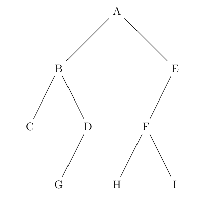
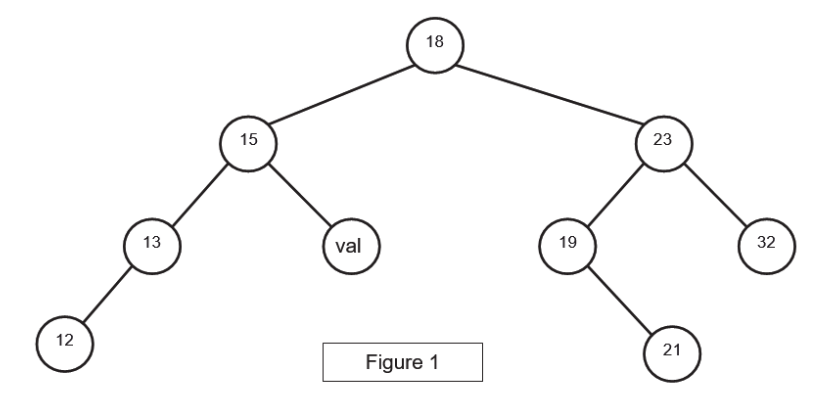
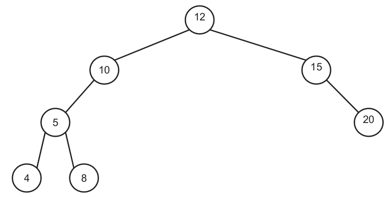
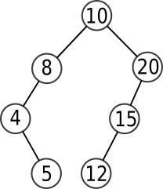

Les arbres binaires
Les exercices taggés du symbole sont à faire sur machine.
Les exercices taggés du symbole doivent être résolus par écrit.
On choisit l'implémentation des listes avec des tuples:
from random import randint
""" Implementation du type abstrait "arbre binaire" avec des listes"""
def arbre_vide():
return []
def noeud(etiquette, gauche = arbre_vide(), droit = arbre_vide()):
return [etiquette, gauche, droit]
def etiquette(arbre):
return arbre[0]
def gauche(arbre):
return arbre[1]
def droit(arbre):
return arbre[2]
def est_vide(arbre):
return arbre == arbre_vide()
-
On veut créer une fonction récursive
genqui g√©n√®re des arbres complets de taillen. Compl√©ter cette fonction:üêç Script Pythondef gen(n): if n == 1: return noeud(randint(0, 100)) else: return noeud(....., ....., .....) -
Définir la fonction
est_feuillequi prend en pramètre un arbre binaire et retourne un booléen qui indique si l'arbre est une feuille ou non. -
Définir la fonction
compte_feuillequi prend en pramètre un arbre binaire et retourne le nombre de feuille de l'arbre. -
Définir la fonction
hauteurqui prend en pramètre un arbre binaire et retourne sa hauteur.
2020, sujet 0
Question 1
Déterminer la taille et la hauteur de l’arbre binaire suivant :
graph TD
A(A)
B(B)
E(E)
C(C)
D(D)
F(F)
L( )
G(G)
J( )
H(H)
I(I)
A --- B
A --- E
B --- C
B --- D
E --- F
E --- L
D --- G
D --- J
F --- H
F --- I
linkStyle 5 stroke-width:0px;
linkStyle 7 stroke-width:0px;
style L opacity:0;
style J opacity:0;Question 2
On décide de numéroter en binaire les nœuds d’un arbre binaire de la façon suivante :
- la racine correspond à 1 ;
- la numérotation pour un fils gauche s’obtient en ajoutant le chiffre 0 à droite au numéro de son père ;
- la numérotation pour un fils droit s’obtient en ajoutant le chiffre 1 à droite au numéro de son père ;
Par exemple, dans l’arbre ci-dessous, on a utilisé ce procédé pour numéroter les nœuds A, B, C, E et F .
graph TD
A(A : 1)
B(B : 10)
E(E : 11)
C(C : 100)
D(D : ?)
F(F : 110)
L( )
G(G : ?)
J( )
H(H : ?)
I(I : ?)
A --- B
A --- E
B --- C
B --- D
E --- F
E --- L
D --- G
D --- J
F --- H
F --- I
linkStyle 5 stroke-width:0px;
linkStyle 7 stroke-width:0px;
style L opacity:0;
style J opacity:0;- Dans l’exemple précédent, quel est le numéro en binaire associé au nœud G ?
- Quel est le nœud dont le numéro en binaire vaut 13 en décimal ?
- En notant \(h\) la hauteur de l’arbre, sur combien de bits seront numérotés les nœuds les plus en bas ?
- Justifier que pour tout arbre de hauteur \(h\) et de taille \(n \geqslant 2\), on a : \(h\leqslant n \leqslant 2^h-1\)
Question 3
Un arbre binaire est dit complet si tous les niveaux de l’arbre sont remplis.
graph TD
A(A)
B(B)
C(C)
D(D)
E(E)
F(F)
G(G)
H(H)
I(I)
J(J)
K(K)
L(L)
M(M)
N(N)
O(O)
A --- B
A --- C
B --- D
B --- E
C --- F
C --- G
D --- H
D --- I
E --- J
E --- K
F --- L
F --- M
G --- N
G --- OOn décide de représenter un arbre binaire complet par un tableau de taille \(n + 1\), où \(n\) est la taille de l’arbre, de la façon suivante:
- La racine a pour indice 1 ;
- Le fils gauche du nœud d’indice i a pour indice \(2 \times i\) ;
- Le fils droit du nœud d’indice i a pour indice \(2 \times i + 1\) ;
- On place la taille \(n\) de l’arbre dans la case d’indice 0.
Répondre aux questions suivantes :
- Déterminer le tableau qui représente l’arbre binaire complet de l’exemple précédent.
- On considère le père du nœud d’indice \(i\) avec \(i \geqslant 2\). Quel est son indice dans le tableau ?
Question 4
On se place dans le cas particulier d’un arbre binaire de recherche complet où les nœuds contiennent des entiers et pour lequel la valeur de chaque noeud est supérieure à celles des noeuds de son fils gauche, et inférieure à celles des noeuds de son fils droit.
Écrire une fonction recherche ayant pour paramètres un arbre arbre et un élément element. Cette
fonction renvoie True si element est dans l’arbre et False sinon. L’arbre sera représenté par un tableau
comme dans la question précédente.
Corrigé
Q1 La taille est 9, la hauteur est 4.
Q2 1. G est associé à 1010.
Q2 2. 13 s'écrit 1101 en binaire, c'est donc le nœud I.
Q2 3. Les nœuds les plus en bas sont notés sur \(h\) bits.
Q2 4. L'arbre de hauteur \(h\) de taille minimale est l'arbre filiforme, qui est de taille \(h\).
L'arbre de hauteur \(h\) de taille maximale est l'arbre complet, qui est de taille \(2^h-1\). Si \(n\) est la taille d'un arbre quelconque de taille \(h\), on a donc bien
\(h \leqslant n \leqslant 2^h-1\).
Q3 1. Tableau : [15, A, B, C, D, E, F, G, H, I, J, K, L, M, N, O] .
Q3 2. Le père du nœud d'indice i a pour indice i//2.
Q4 :
def recherche(arbre, element):
i = 1
while i < len(arbre):
if arbre[i] == element:
return True
if element < arbre[i]:
i = 2*i # on se place sur le fils gauche
else:
i = 2*i + 1 # on se place sur le fils droit
return False
Exercice 2 du sujet 2022 Nouvelle-Caledonie J2
Correction 1.
C'est un arbre binaire car chaque nœud possède au maximum deux fils.
Correction 2.a
V est un dictionnaire.
Correction 2.b
V['J']
Correction 2.c
| üêç Script Python | |
|---|---|
1 2 3 4 5 | |
Correction 2.d
| üêç Script Python | |
|---|---|
1 2 3 4 5 6 7 | |
Correction 3.
Cet algorithme calcule le nombre total de nœuds de l'arbre, donc la taille de l'arbre. C'est un algorithme récursif qui va renvoyer, si on n'est pas positionné sur un arbre vide, la valeur 1 (correspond au nœud racine sur lequel on est positionné), plus la taille des deux sous-arbres gauche et droits.
Correction 4.a
Le parcours est A-B-C-E-D-F-G-I-H-J
Correction 4.b
C'est un parcours préfixe.
2020, sujet 0
Question 1
Déterminer la taille et la hauteur de l’arbre binaire suivant : 
Question 2
On décide de numéroter en binaire les nœuds d’un arbre binaire de la façon suivante :
- la racine correspond à 1 ;
- la numérotation pour un fils gauche s’obtient en ajoutant le chiffre 0 à droite au numéro de son père ;
- la numérotation pour un fils droit s’obtient en ajoutant le chiffre 1 à droite au numéro de son père ;
Par exemple, dans l’arbre ci-dessous, on a utilisé ce procédé pour numéroter les nœuds A, B, C, E et F .

- Dans l’exemple précédent, quel est le numéro en binaire associé au nœud G ?
- Quel est le nœud dont le numéro en binaire vaut 13 en décimal ?
- En notant \(h\) la hauteur de l’arbre, sur combien de bits seront numérotés les nœuds les plus en bas ?
- Justifier que pour tout arbre de hauteur \(h\) et de taille \(n \geqslant 2\), on a : \(h\leqslant n \leqslant 2^h-1\)
Question 3
Un arbre binaire est dit complet si tous les niveaux de l’arbre sont remplis.

On décide de représenter un arbre binaire complet par un tableau de taille n + 1, où n est la taille de l’arbre, de la façon suivante :
- La racine a pour indice 1 ;
- Le fils gauche du nœud d’indice i a pour indice \(2 \times i\) ;
- Le fils droit du nœud d’indice i a pour indice \(2 \times i + 1\) ;
- On place la taille \(n\) de l’arbre dans la case d’indice 0.
Répondre aux questions suivantes :
- Déterminer le tableau qui représente l’arbre binaire complet de l’exemple précédent.
- On considère le père du nœud d’indice \(i\) avec \(i \geqslant 2\). Quel est son indice dans le tableau ?
Question 4
On se place dans le cas particulier d’un arbre binaire de recherche complet où les nœuds contiennent des entiers et pour lequel la valeur de chaque noeud est supérieure à celles des noeuds de son fils gauche, et inférieure à celles des noeuds de son fils droit.
Écrire une fonction recherche ayant pour paramètres un arbre arbre et un élément element. Cette
fonction renvoie True si element est dans l’arbre et False sinon. L’arbre sera représenté par un tableau
comme dans la question précédente.
corrigé
Q1 La taille est 9, la hauteur est 4.
Q2 1. G est associé à 1010.
Q2 2. 13 s'écrit 1101 en binaire, c'est donc le nœud I.
Q2 3. Les nœuds les plus en bas sont notés sur \(h\) bits.
Q2 4. L'arbre de hauteur \(h\) de taille minimale est l'arbre filiforme, qui est de taille \(h\).
L'arbre de hauteur \(h\) de taille maximale est l'arbre complet, qui est de taille \(2^h-1\). Si \(n\) est la taille d'un arbre quelconque de taille \(h\), on a donc bien
\(h \leqslant n \leqslant 2^h-1\).
Q3 1. Tableau : [15, A, B, C, D, E, F, G, H, I, J, K, L, M, N, O] .
Q3 2. Le père du nœud d'indice i a pour indice i//2.
Q4 :
def recherche(arbre, element):
i = 1
while i < len(arbre):
if arbre[i] == element:
return True
if element < arbre[i]:
i = 2*i # on se place sur le fils gauche
else:
i = 2*i + 1 # on se place sur le fils droit
return False
2021, Métropole sujet 1
Dans cet exercice, les arbres binaires de recherche ne peuvent pas comporter plusieurs fois la
même clé. De plus, un arbre binaire de recherche limité à un nœud a une hauteur de 1.
On considère l’arbre binaire de recherche représenté ci-dessous (figure 1), où val représente un entier :

1.a Donner le nombre de feuilles de cet arbre et préciser leur valeur (étiquette).
1.b Donner le sous arbre-gauche du nœud 23.
1.c Donner la hauteur et la taille de l’arbre.
1.d Donner les valeurs entières possibles de val pour cet arbre binaire de recherche.
On suppose, pour la suite de cet exercice, que val est égal à 16.
2. On rappelle qu’un parcours infixe depuis un nœud consiste, dans l’ordre, à faire un parcours
infixe sur le sous arbre-gauche, afficher le nœud puis faire un parcours infixe sur le sous-arbre
droit.
Dans le cas d’un parcours suffixe, on fait un parcours suffixe sur le sous-arbre gauche puis un
parcours suffixe sur le sous-arbre droit, avant d’afficher le nœud.
a. Donner les valeurs d’affichage des nœuds dans le cas du parcours infixe de l’arbre.
b. Donner les valeurs d’affichage des nœuds dans le cas du parcours suffixe de l’arbre.
3. On considère la classe Noeud définie de la façon suivante en Python :

a. Représenter l’arbre construit suite à l’exécution de l’instruction suivante :
racine = Noeud(18)
racine.insere_tout([12, 13, 15, 16, 19, 21, 32, 23])
val est égal à 16.
c. On considère l’arbre tel qu’il est présenté sur la figure 1. Déterminer l’ordre d’exécution des
blocs (repérés de 1 à 3) suite à l’application de la méthode insere(19) au nœud racine
de cet arbre.
4. Écrire une méthode recherche(self, v) qui prend en argument un entier v et renvoie la
valeur True si cet entier est une étiquette de l’arbre, False sinon.
corrigé
1.a. Il y a 4 feuilles, d'étiquette 12, val, 21 et 32.
1.b. Le sous-arbre gauche du nœud 23 est 19-21.
1.c. La hauteur de l'arbre est 4. Sa taille est 9.
1.d. Les valeurs possibles de val sont 16 et 17.
2.a. Parcours infixe : 12-13-15-16-18-19-21-23-32
2.b. Parcours suffixe : 12-13-16-15-21-19-32-23-18
3.a.
3.b.
racine = Noeud(18)
racine.insere([15, 13, 12, 16, 23, 32, 19, 21])
3.c. Bloc 3 - Bloc 2 - Bloc 1
4.
| üêç Script Python | |
|---|---|
1 2 3 4 5 6 7 8 9 10 11 12 13 14 15 16 17 18 19 20 21 22 23 24 25 26 27 28 29 30 31 32 33 34 35 36 37 38 39 40 41 42 43 44 45 | |
2021, Métropole Candidats Libres 2
On rappelle qu’un arbre binaire est composé de nœuds, chacun des nœuds possédant éventuellement un sous-arbre gauche et éventuellement un sous-arbre droit. Un nœud sans sous-arbre est appelé feuille. La taille d’un arbre est le nombre de nœuds qu’il contient ; sa hauteur est le nombre de nœuds du plus long chemin qui joint le nœud racine à l’une des feuilles. Ainsi la hauteur d’un arbre réduit à un nœud, c’est-à-dire la racine, est 1.
Dans un arbre binaire de recherche, chaque nœud contient une clé, ici un nombre entier, qui est :
- strictement supérieure à toutes les clés des nœuds du sous-arbre gauche ;
- strictement inférieure à toutes les clés des nœuds du sous-arbre droit.
Un arbre binaire de recherche est dit « bien construit » s’il n’existe pas d’arbre de hauteur inférieure qui pourrait contenir tous ses nœuds.
On considère l’arbre binaire de recherche ci-dessous.

1.a. Quelle est la taille de l’arbre ci-dessus ?
1.b. Quelle est la hauteur de l’arbre ci-dessus ?
corrigé
1.a. La taille de l'arbre est 7.
1.b. La hauteur de l'arbre est 4.
2. Cet arbre binaire de recherche n’est pas « bien construit ». Proposer un arbre binaire de recherche contenant les mêmes clés et dont la hauteur est plus petite que celle de l’arbre initial.
3. Les classes Noeud et Arbre ci-dessous permettent de mettre en œuvre en Python
la structure d’arbre binaire de recherche. La méthode insere permet d’insérer
récursivement une nouvelle clé.
| üêç Script Python | |
|---|---|
1 2 3 4 5 6 7 8 9 10 11 12 13 14 15 16 17 18 19 20 21 22 23 24 25 26 | |
Donner la représentation de l’arbre codé par les instructions ci-dessous.
a = Arbre(10)
a.insere(20)
a.insere(15)
a.insere(12)
a.insere(8)
a.insere(4)
a.insere(5)
corrigé
3. 
4. Pour calculer la hauteur d’un arbre non vide, on a écrit la méthode ci-dessous dans la classe Noeud.
def hauteur(self):
if self.gauche == None and self.droit == None:
return 1
if self.gauche == None:
return 1 + self.droit.hauteur()
elif self.droit == None:
return 1 + self.gauche.hauteur()
else:
hg = self.gauche.hauteur()
hd = self.droit.hauteur()
if hg > hd:
return hg + 1
else:
return hd + 1
hauteur de la classe Arbre qui renvoie la hauteur de
l’arbre.
corrigé
4.
| üêç Script Python | |
|---|---|
1 2 | |
5. Écrire les méthodes taille des classes Noeud et Arbre permettant de calculer
la taille d’un arbre.
corrigé
5.
Méthode taille de la classe Noeud :
| üêç Script Python | |
|---|---|
1 2 3 4 5 6 7 8 9 | |
taille de la classe Arbre :
| üêç Script Python | |
|---|---|
1 2 | |
6. On souhaite écrire une méthode bien_construit de la classe Arbre qui
renvoie la valeur True si l’arbre est « bien construit » et False sinon.
On rappelle que la taille maximale d’un arbre binaire de recherche de hauteur \(ℎ\) est \(2^h - 1\).
6.a Quelle est la taille minimale, notée min d’un arbre binaire de recherche
« bien construit » de hauteur \(ℎ\) ?
corrigé
6.a. La configuration minimale d'un arbre bien construit de hauteur \(h\) peut être :
La taille minimale min est donc égale à \(2^{h-1}\).
6.b Écrire la méthode bien_construit demandée.
corrigé
6.b. Intuitivement, un arbre est mal construit si sa hauteur est trop grande par rapport à sa taille (trop étiré).
Donc un arbre est mal construit si sa taille est trop petite par rapport à sa hauteur.
Donc un arbre de taille \(t\) et de hauteur \(h\) est mal construit si \(t < 2^{h-1}\), puisqu'on a démontré que \(2^{h-1}\) était la taille minimale.
Pour tester si un arbre est bien construit, on va donc juste vérifier que \(t \geqslant 2^{h-1}\) :
| üêç Script Python | |
|---|---|
1 2 3 | |
2021, Polynésie
Cet exercice traite principalement du thème « algorithmique, langages et programmation » et en particulier les arbres binaires de recherche. La première partie aborde les arbres en mode débranché via l'application d'un algorithme sur un exemple. La suivante porte sur la programmation orientée objet. La dernière partie fait le lien avec les algorithmes de tri.
Partie A : Étude d'un exemple
Considérons l'arbre binaire de recherche ci-dessous :
Q1. Indiquer quelle valeur a le nœud racine et quels sont les fils de ce nœud.
corrigé
Le nœud racine est 5 et ses fils sont 2 et 7.
Q2. Indiquer quels sont les nœuds de la branche qui se termine par la feuille qui a pour valeur 3.
corrigé
La branche qui se termine par la feuille 3 a pour nœuds 5, 2 et 3.
Q3. Dessiner l’arbre obtenu après l’ajout de la valeur 6.
corrigé

Partie B : Implémentation en Python
Voici un extrait d’une implémentation en Python d'une classe modélisant un arbre binaire de recherche.
| üêç Script Python | |
|---|---|
1 2 3 4 5 6 7 8 9 10 11 12 13 14 15 16 17 18 19 20 21 22 23 24 | |
Q1. Expliquer le rôle de la fonction __init__.
corrigé
La fonction __init__ est appelée «méthode constructeur», c'est elle qui crée l'objet et le dote de tous les attributs nécessaires.
Q2. Dans cette implémentation, expliquer ce qui se passe si on ajoute un élément déjà présent dans l’arbre.
corrigé
Si on ajoute un élément déjà présent dans l'arbre, la valeur e sera égale à self.valeur (éventuellement après quelques appels récursifs). Or ce cas d'égalité n'est pas prévu par les tests : il ne se passera donc RIEN. Ceci est le comportement souhaité puisqu'on ne veut pas avoir deux valeurs identiques dans notre ABR, ainsi qu'il est rappelé au début de l'énoncé.
Q3. Recopier et compléter les pointillés ci-dessous permettant de créer l’arbre de la partie A.
arbre = ABR(.......... )
arbre.insererElement(2)
arbre.insererElement(.......... )
arbre.insererElement(7)
arbre.insererElement(.......... )
corrigé
arbre = ABR(5)
arbre.insererElement(2)
arbre.insererElement(3)
arbre.insererElement(7)
arbre.insererElement(8)
Partie C : Tri par arbre binaire de recherche
On souhaite trier un ensemble de valeurs entières distinctes grâce à un arbre binaire de recherche. Pour cela, on ajoute un à un les éléments de l’ensemble dans un arbre initialement vide. Il ne reste plus qu’à parcourir l’arbre afin de lire et de stocker dans un tableau résultat les valeurs dans l’ordre croissant.
Q1. Donner le nom du parcours qui permet de visiter les valeurs d’un arbre binaire de recherche dans l’ordre croissant.
corrigé
Le parcours qui permet de visiter les valeurs d'un ABR dans l'ordre croissant est le parcours infixe.
Q2. Comparer la complexité de cette méthode de tri avec celle du tri par insertion ou du tri par sélection.
corrigé
question difficile
Pour créer l'ABR, il faut d'abord insérer chacune des valeurs. La fonction insertion reposant sur une division par 2 à chaque étape de la taille de l'espace de recherche, on peut dire qu'elle a une complexité logarithmique. Mais cette opération est à effectuer autant de fois qu'il y a d'éléments à insérer : il faut donc multiplier la complexité logarithmique par n, ce qui fera donc une complexité en \(n \log(n)\).
L'algorithme de parcours infixe est lui aussi linéraire, ce qui ne change pas la complexité totale.
Cette complexité est meilleure que le tris par insertion ou sélection, qui sont de complexité quadratique.
2021, Centres Étrangers, sujet 1
Un arbre binaire est soit vide, soit un nœud qui a une valeur et au plus deux fils (le sous-arbre gauche et le sous-arbre droit).

- X est un nœud, sa valeur est X.valeur
- G1 est le fils gauche de X, noté X.fils_gauche
- D1 est le fils droit de X, noté X.fils_droit
Un arbre binaire de recherche est ordonné de la manière suivante :
Pour chaque nœud X,
- les valeurs de tous les nœuds du sous-arbre gauche sont strictement inférieures à la valeur du nœud X
- les valeurs de tous les nœuds du sous-arbre droit sont supérieures ou égales à la valeur du nœud X.
Ainsi, par exemple, toutes les valeurs des nœuds G1, G2 et G3 sont strictement inférieures à la valeur du nœud X et toutes les valeurs des nœuds D1, D2 et D3 sont supérieures ou égales à la valeur du nœud X.
Voici un exemple d'arbre binaire de recherche dans lequel on a stocké dans cet ordre
les valeurs : [26, 3, 42, 15, 29, 19, 13, 1, 32, 37, 30]
L'étiquette d'un nœud indique la valeur du nœud suivie du nom du nœud. Les nœuds ont été nommés dans l'ordre de leur insertion dans l'arbre ci-dessous.
'29, noeud04' signifie que le nœud nommé noeud04 possède la valeur 29.

Q1. On insère la valeur 25 dans l'arbre, dans un nouveau nœud nommé nœud11.
Recopier l'arbre binaire de recherche étudié et placer la valeur 25 sur cet arbre en coloriant en rouge le chemin parcouru.
Préciser sous quel nœud la valeur 25 sera insérée et si elle est insérée en fils gauche ou en fils droit, et expliquer toutes les étapes de la décision.
Correction

25 étant plus petit que 26, on part dans son sous-arbre gauche.
25 étant plus grand que 3, on part dans son sous-arbre droit.
25 étant plus grand que 15, on part dans son sous-arbre droit.
25 étant plus grand que 19, on insère 25 en tant que fils droit de 19.
Q2. Préciser toutes les valeurs entières que l’on peut stocker dans le nœud fils gauche du nœud04 (vide pour l'instant), en respectant les règles sur les arbres binaires de recherche.
Correction
Les valeurs acceptables doivent être strictement inférieures à 29, et supérieures ou égales à 26. Ces valeurs sont donc : 26, 27 et 28.
Q3. Voici un algorithme récursif permettant de parcourir et d'afficher les valeurs de l'arbre :
Parcours(A) # A est un arbre binaire de recherche
Afficher(A.valeur)
Parcours(A.fils_gauche)
Parcours(A.fils_droit)
Q3.a. Écrire la liste de toutes les valeurs dans l'ordre où elles seront affichées.
Correction
Les valeurs seront affichées dans l'ordre suivant : 26-3-1-15-13-19-25-42-29-32-30-37
Q3.b. Choisir le type de parcours d'arbres binaires de recherche réalisé parmi les propositions suivantes : Préfixe, Suffixe ou Infixe.
Correction
On reconnait un parcours préfixe.
Q4. En vous inspirant de l’algorithme précédent, écrire un algorithme Parcours2 permettant de parcourir et d'afficher les valeurs de l'arbre A dans l'ordre croissant.
Correction
Pour afficher les valeurs d'un ABR dans un ordre croissant, il faut utiliser un parcours infixe. Un algorithme récursif de parcours infixe peut être celui-ci:
Parcours2(A) # A est un arbre binaire de recherche
Parcours2(A.fils_gauche)
Afficher(A.valeur)
Parcours2(A.fils_droit)